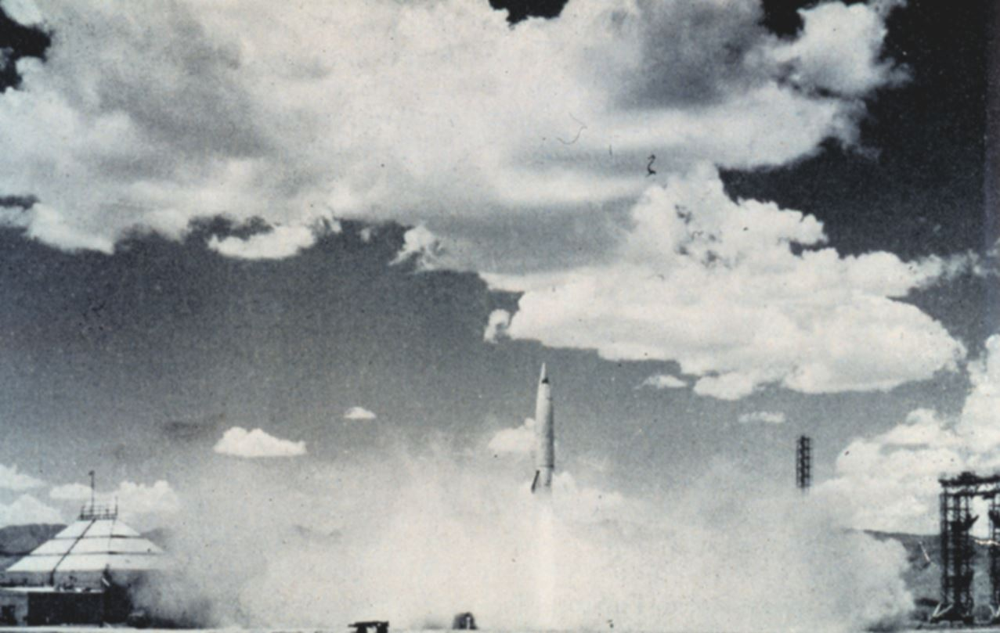
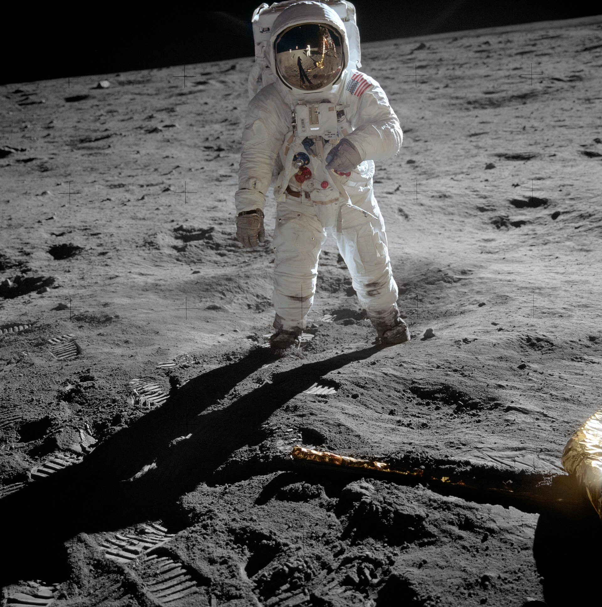

Destination Moon (1953) and Explorers on the Moon (1954) are considered the most scientifically accurate comics ever drawn. Hergé started preparing in the late 1940s, built a physical model of the rocket, hired three scientific advisors — and finished the story fifteen to nineteen years before Apollo 11.
How the project began
Hergé starts dreaming of sending Tintin to the Moon — seriously, with the best science available.
Jacques Van Melkebeke and Bernard Heuvelmans write a first script set in the United States, with a villain selling rocket secrets. Hergé draws two pages, finds it too fantastical — and on publisher Raymond Leblanc's advice, moves the story to the neutral fictional country of Syldavia.
The story starts in the Belgian Tintin magazine (the French edition follows on 11 May), initially under the single title Explorers on the Moon.
Serialisation stops: Hergé suffers a severe nervous breakdown and eczema. The story pauses for over a year.
Publication resumes and finishes after 117 weekly strips, later split into the two famous albums.
Destination Moon (1953) and Explorers on the Moon (1954) appear as books — the 16th and 17th Tintin albums.
The science machine
Hergé was a visual engineer by this point. The rocket design came from the German V2 — including its famous red-and-white checkered pattern, which Hergé found in Leslie Simon's 1947 book German Research in World War II: the grid was how ground cameras tracked a rocket's rotation in flight.

And he hired real experts:
- Prof. Alexandre Ananoff — French-Russian astronautics pioneer, author of L'Astronautique (1950). Hergé's chief authority on propulsion, gravity, space suits and ballistics. Ananoff chose one of fifteen theoretical Moon-flight scenarios for the story.
- Bernard Heuvelmans — zoologist and author of L'Homme parmi les Étoiles. Supplied technical documentation, suggested nuclear propulsion, and advised on the idea of ice under the Moon's surface.
- Max Hoyaux — scientific director of ACEC, a Belgian nuclear research centre. Gave Hergé a tour of a real atomic plant, which inspired the Sprodj Atomic Research Centre in the story.
Then came the studio's secret weapon: assistant Arthur Van Noeyen built a detailed scale model of the rocket with detachable internal parts. Hergé took it to Paris for Ananoff's validation, and every artist drew the interiors from that one physical model — so the rocket stays spatially consistent in every panel. Bob De Moor (who joined the studio on 6 March 1951) drew the rocket, the launchpad scaffolding, the interiors and the lunar landscapes. A single full-page panel of the rocket on its pad took him three weeks.
Visual sources included the October 1952 Collier's magazine with Wernher von Braun's moon plans and Chesley Bonestell's paintings, Fritz Lang's 1929 film Frau im Mond, and stills from George Pal's 1950 film Destination Moon.
The X-FLR 6
Tintin's rocket, the X-FLR 6, was powered by a nuclear engine superheating liquid hydrogen to 2,400 °C — using a fictional heat-resistant alloy called Calculiet. It jettisoned two booster stages at launch (a three-stage architecture, just like the real Saturn V that would fly a decade later) and landed vertically on its tail fins using retro-rockets — a technique considered impractical for decades, until SpaceX demonstrated exactly that in the 2010s.
Unlike Apollo's two-spacecraft approach, the X-FLR 6 was a single reusable vessel that landed whole on the Moon and flew home — with a motorised tracked moon rover on board.

What Hergé got right
The list is remarkable for a comic drawn in 1950–1953:
- Weightlessness — floating objects, spherical liquid drops in zero-g (Haddock's floating whisky), astronauts pushing off walls to move
- Ice under the lunar surface — Tintin falls into a cave with underground ice; Chandrayaan-1 confirmed water ice on the Moon in 2008
- Life support — closed-system environmental control with CO2 scrubbing and pressurisation procedures
- Tilted acceleration couches — g-seats proposed by Ananoff to protect the crew at launch
- Moon walking — astronauts moving in great bounds in low gravity
- The lunar rover — a tracked "moon tank", years before NASA's Lunar Roving Vehicle
- Untethered spacewalks — Haddock floats free on a line, 34 years before Bruce McCandless flew the Manned Maneuvering Unit in 1984
- Earth as a sphere in black space
Where reality diverged: real missions used chemical rockets, not nuclear; Apollo left a dedicated lander behind while the command ship orbited (Hergé landed his entire ship); the launch site was inland Syldavia rather than a coastal cape; and the X-FLR 6 reached 45 km/s — a four-hour trip to the Moon, not three days. Hergé also drew a billowing dust cloud at landing (impossible in a vacuum) and lunar caves with stalactites (which don't exist).
The comic that inspired the engineers
Generations of NASA and ESA engineers and astronauts have said the moon albums were their childhood introduction to spaceflight. ESA uses the Tintin rocket as an educational symbol, and in 2025 ESA chief exploration scientist Angelique van Ombergen took a LEGO model of the rocket on an official parabolic flight — subjecting it to microgravity 31 times. In 1969, Hergé returned the compliment with a drawing of Tintin, Haddock, Calculus and Snowy welcoming Neil Armstrong to the Moon — and a four-page Apollo 12 comic for Paris Match.
Want to know how to recognise a true first edition of these albums? That's the Collector's Guide — with the B8 and B11 codes.